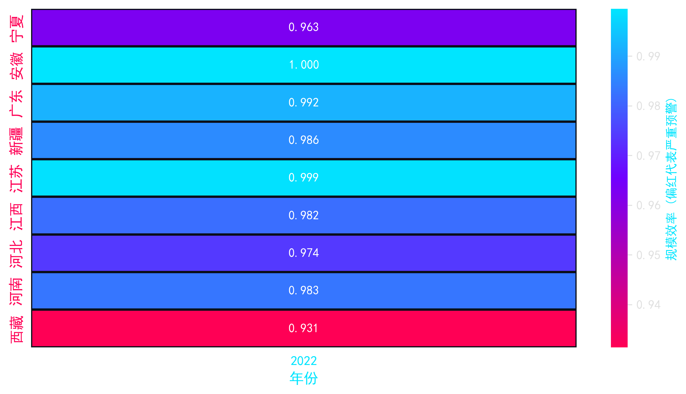

基于 K-Means 聚类与 DEA 规模效率双重验证，系统精准锁定了 9 个处于“中高投入低转化”的高危省份，并绘制了时序热力预警图，直观展现其跌入“低效陷阱”的历史轨迹。
在最新 2022 年截面中，西藏 (0.9314) 与 宁夏 (0.9626) 得分垫底。这反映了西部地广人稀区域在医疗资源空间配置上的天然劣势，导致规模效率难以突破。
值得警惕的是，广东 (0.9919)、江苏 (0.9987) 等经济大省同样被系统预警！尽管其得分逼近 1.0，但在庞大的投入基数下，微小的效率折损也意味着巨大的资源沉没，亟需转向内涵式结构优化。
